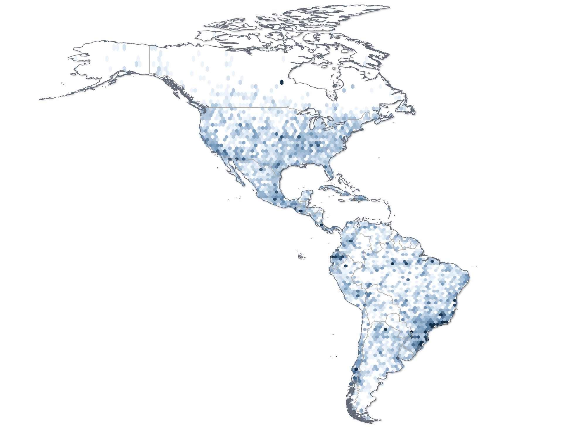
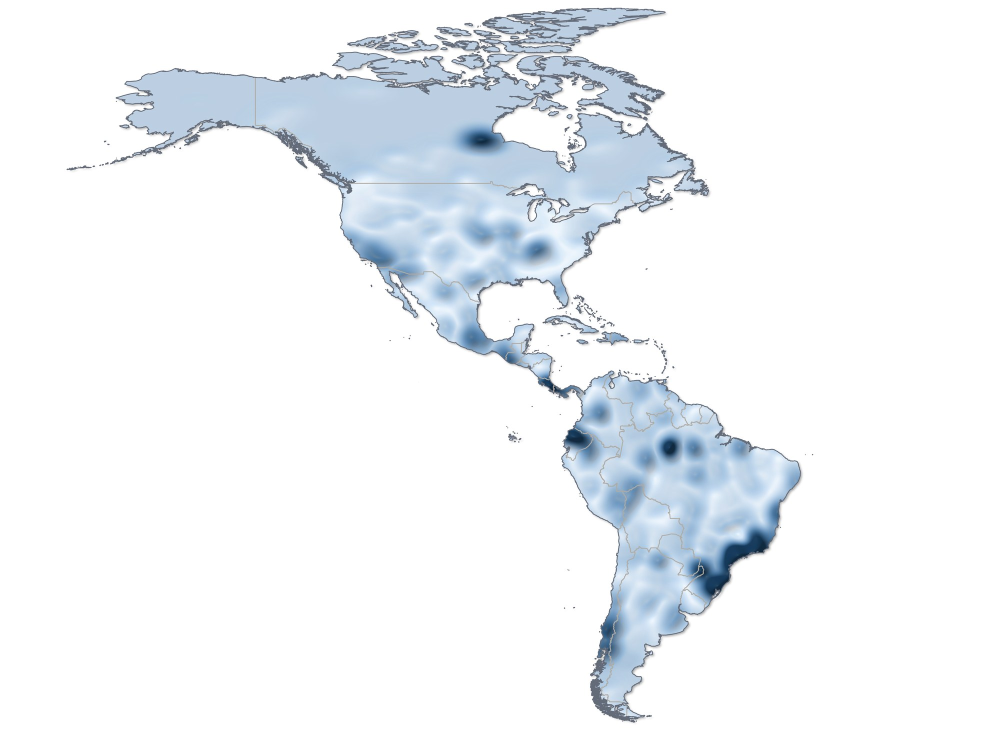
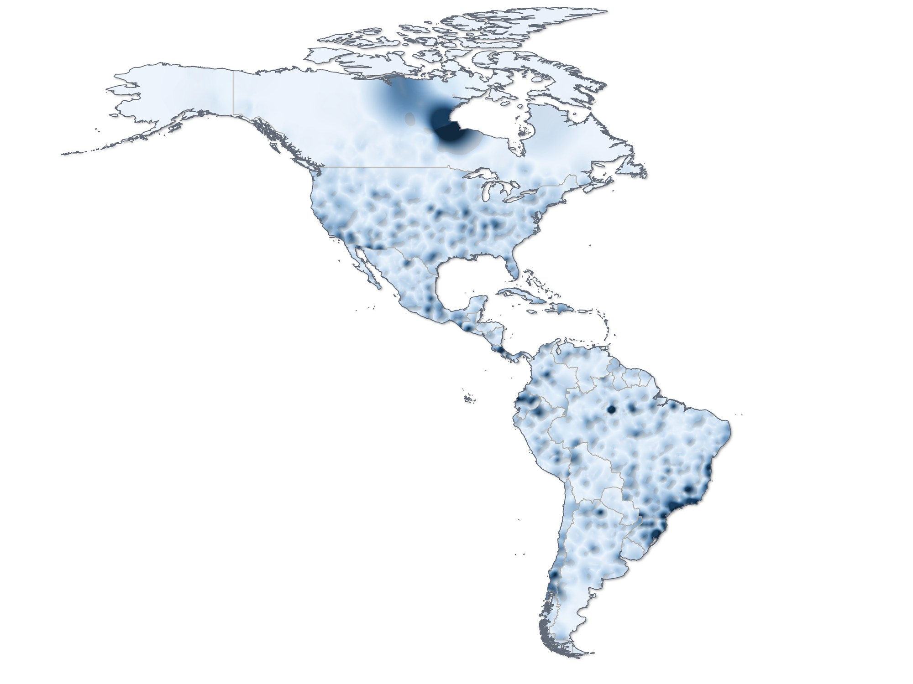
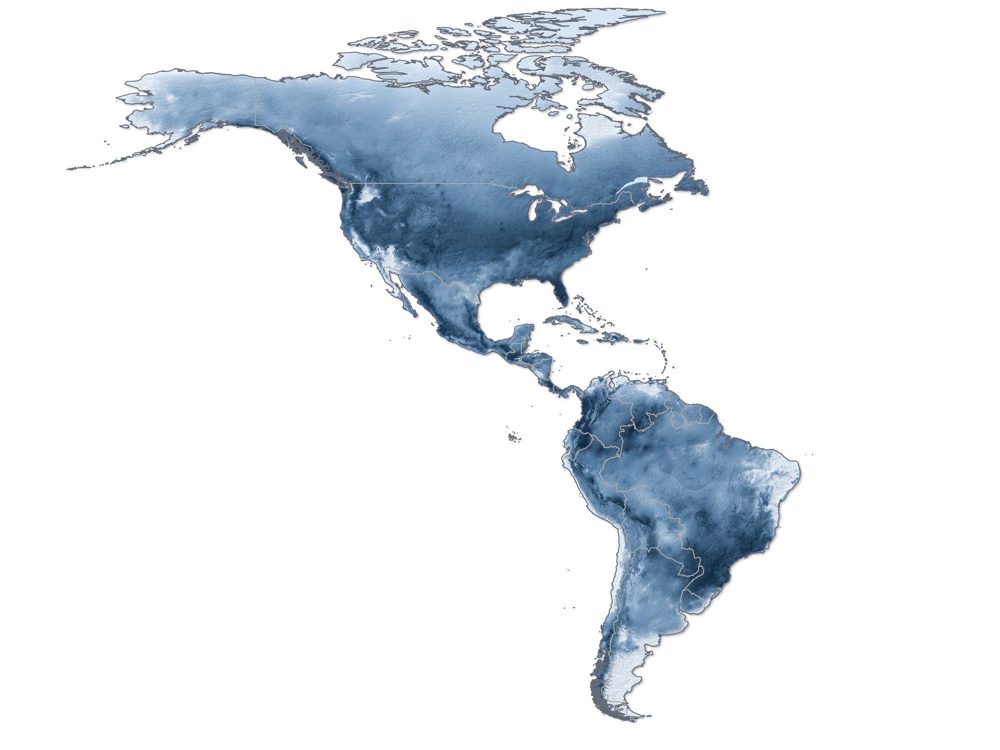
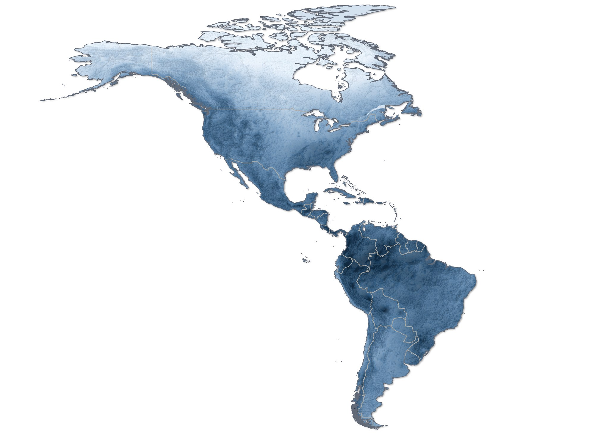
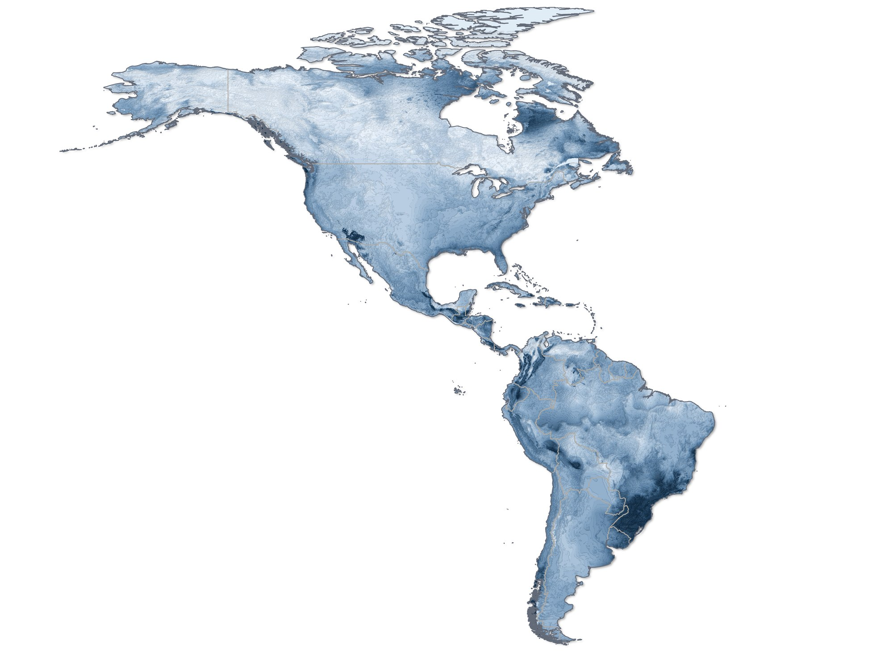
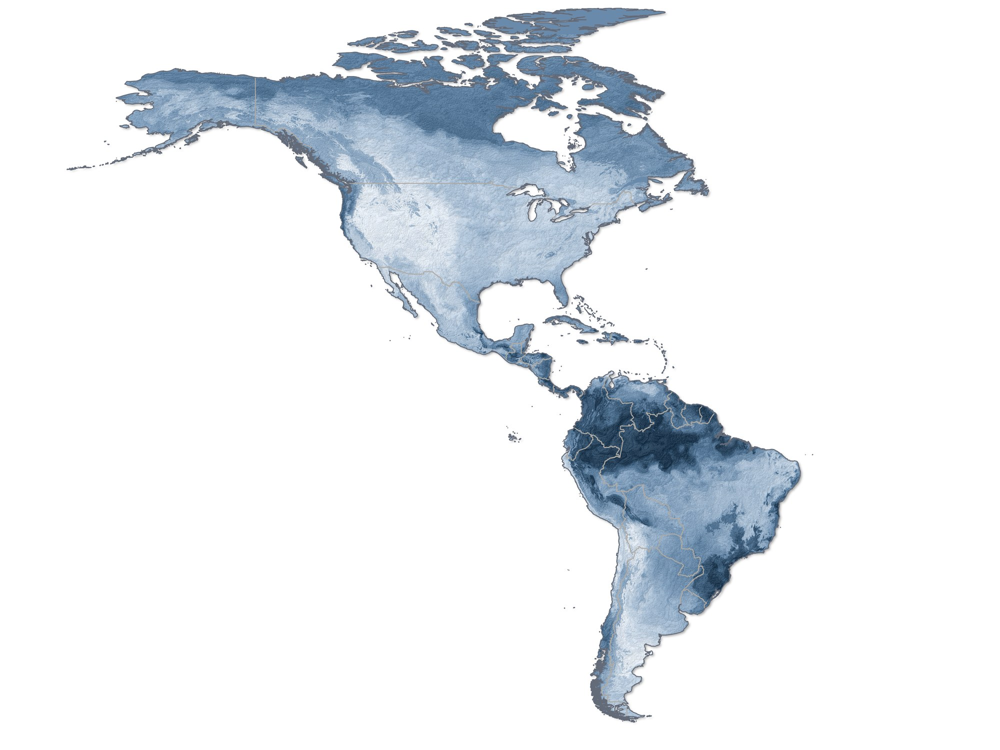
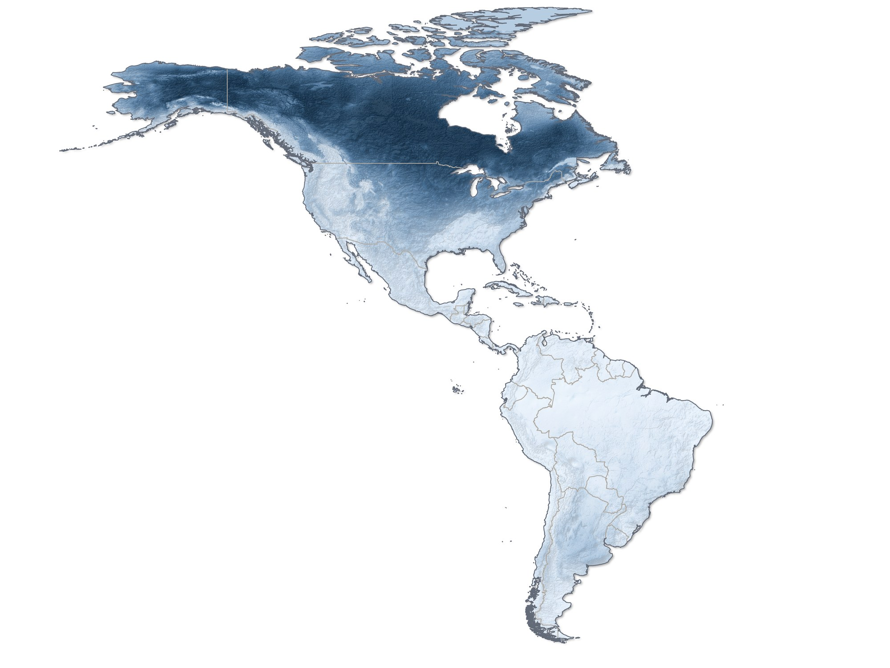

Spider richness in the Americas: what is observed and what the environment predicts
Observed richness in 1° hexagons, interpolated by kriging and by spline, and predicted from the environment by five algorithms: GAM, GLM, MARS, Random Forest and SVM.
- Deliverable
- PhD thesis, Graduate Program in Zoology, UFMG (ch. 3)
- Advisor
- Adalberto J. dos Santos
- My role
- Author: database, analyses and maps
- Tools
- QGIS · BioDinamica (Dinamica EGO) · ArcGIS Pro · R








Observed richness per 1° hexagon, computed directly from the records. It is the starting data, before any interpolation.
Observed richness interpolated by kriging from the hexagons: a continuous surface that accounts for spatial autocorrelation.
Observed richness interpolated by spline, a deterministic interpolator that produces a smoother surface than kriging.
Richness predicted by a generalized additive model (GAM), from the principal components of the environment.
Richness predicted by a generalized linear model (GLM), from the principal components of the environment.
Richness predicted by multivariate adaptive regression splines (MARS), from the principal components of the environment.
Richness predicted by Random Forest, from the principal components of the environment.
Richness predicted by a support vector machine (SVM), from the principal components of the environment.
The three ways of mapping observed richness, side by side.
Observed richness (kriging) and the five predictions, to compare where the algorithms agree.
The problem
Richness maps made only from records show both diversity and collecting effort. Predicting richness from the environment helps reveal where it should be high even where little has been collected.
The data
The 88,684 records from plate 1, aggregated in 1° hexagons. As predictors, a PCA of the 19 bioclimatic variables and altitude from WorldClim and actual evapotranspiration from USGS, at 2.5′ resolution; the first four components add up to 97% of the variation.
The method
- Observed richness per 1° hexagon in BioDinamica.
- Interpolation of observed richness by kriging and by spline.
- Prediction of richness by five algorithms (GAM, GLM, MARS, Random Forest and SVM), with the principal components of the environment as predictors.
- Correlation with the bias maps of plate 1 and comparison between the predictions.
The result
Observed richness follows collecting effort; predictions made from the environment depend much less on it.
- Peaks of observed richness in Colombia, Ecuador, Peru, Brazil, Bolivia, Mexico, Central America and the Caribbean.
- Observed richness is strongly correlated with record density (r = 0.7).
Publication
- Russo P. (2024). Spider biogeography of the Americas: from literature data to diversity patterns. PhD thesis, Graduate Program in Zoology, UFMG.